Restaurant libanais · Grand-Place de Mons
Les Portesd'Orient
أهلاً وسهلاًahlan wa sahlan · bienvenue
Mezze froids, grillades servies dans la faïence bleue, thé servi dans la théière d'argent et pâtisseries orientales : la cuisine libanaise au numéro 30 de la Grand-Place, avec la terrasse sur les pavés.
Midi et soir, 7 jours sur 7
- Terrasse sur la Grand-Place
- Ouvert tous les jours
- Pâtisseries à emporter
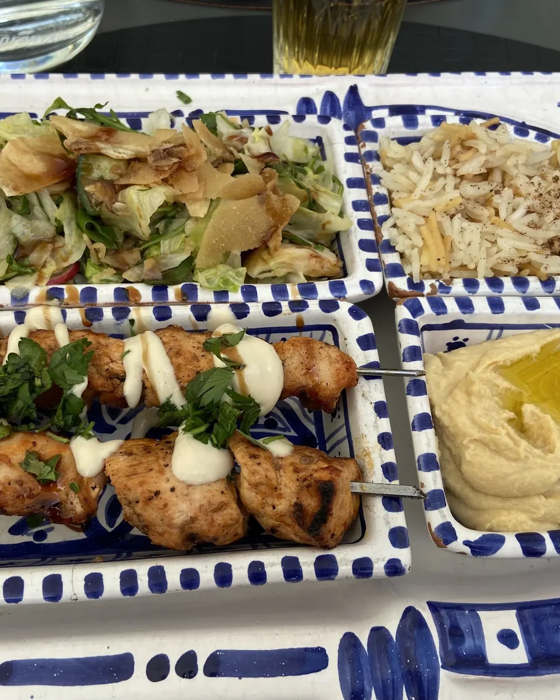
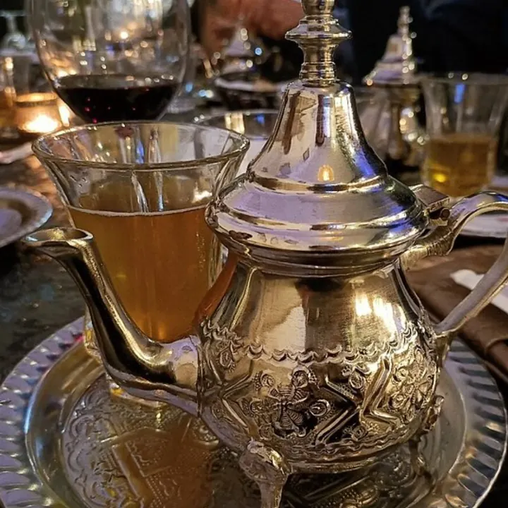
L'heure du théLa maison
Sur la Grand-Place, chez un patron qui vient discuter à table
Aux Portes d'Orient, on mange libanais au cœur de Mons, midi et soir, tous les jours de la semaine. Aux beaux jours, les tables sortent sur les pavés de la Grand-Place ; dans la salle, un mur de zelliges, des théières d'argent et la vaisselle peinte en bleu. Carole raconte que le patron est venu discuter avec sa tablée ; Lucie l'a trouvé « très gentil et serviable ».
« […] nous avons mangé sur la terrasse, c était vraiment très bon et copieux, le service était bien et le patron est venu discuter un peu avec nous. Très agréable moment sur la grand place de Mons. »Carole F., avis Google
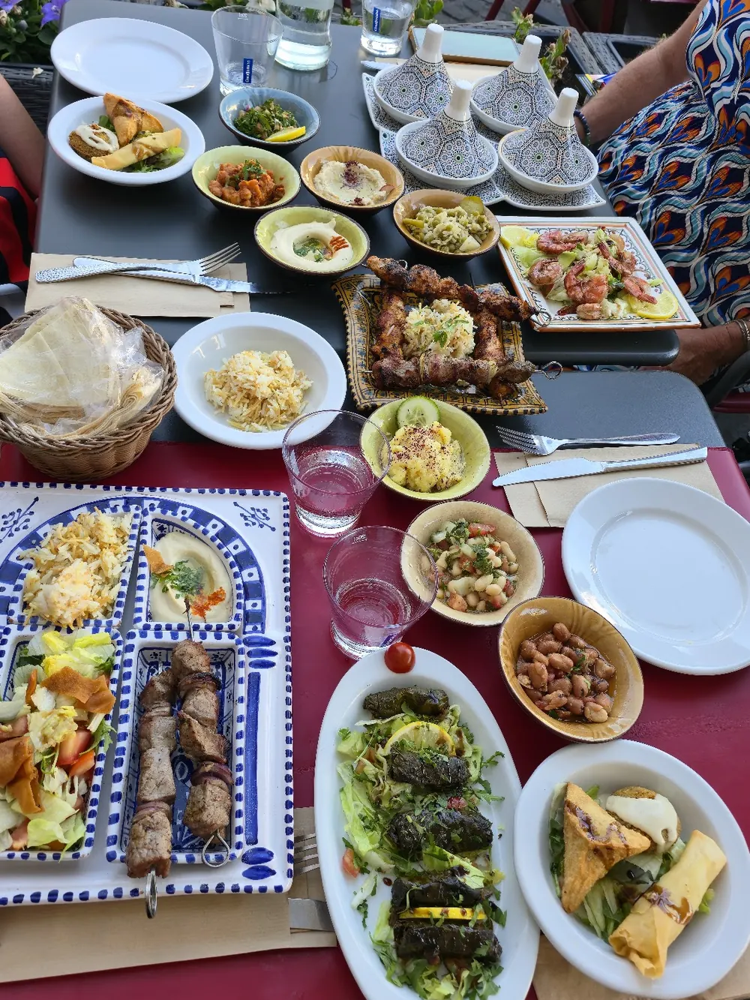
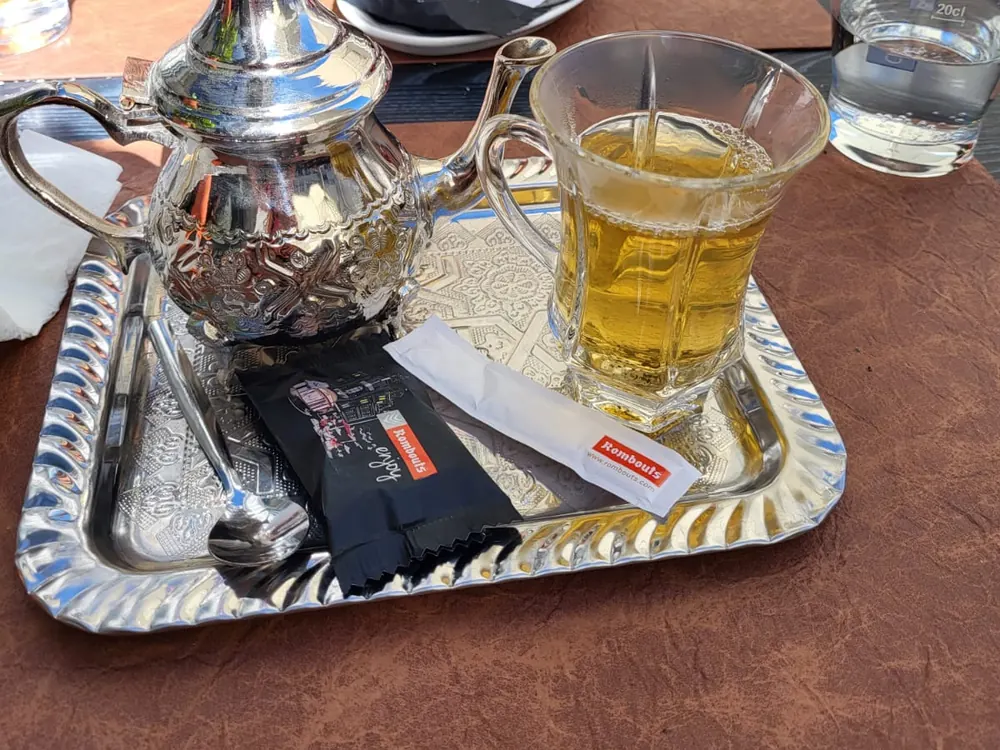
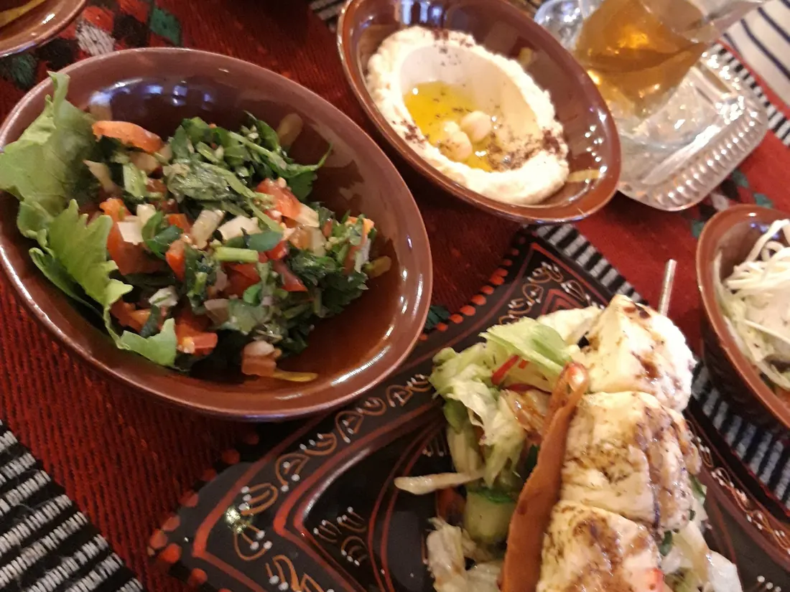
La carte
Treize mezze froids, de 8 à 10 €
Les entrées froides de la maison, nom pour nom et prix pour prix. À partager au milieu de la table, ou à aligner pour en faire tout un repas.
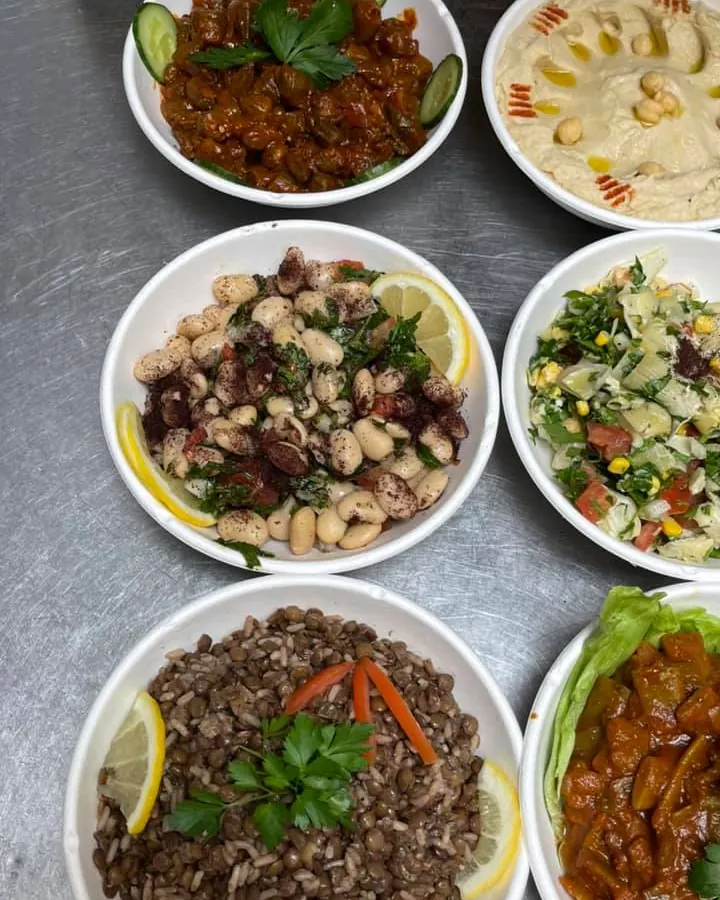
Grillades, pâtisseries et thé complètent la carte. La carte entière : 0472 66 37 05.
Prix relevés sur la carte des entrées froides publiée en photo sur Google. Ils peuvent avoir changé : la maison les confirme sur place.
Réserver une tableÀ table
La faïence bleue, tout un repas par assiette
Grillade, hommos, riz et salade se partagent les compartiments d'une même assiette peinte de bleu ; le fattouch arrive avec sa menthe fraîche et ses grains de grenade.
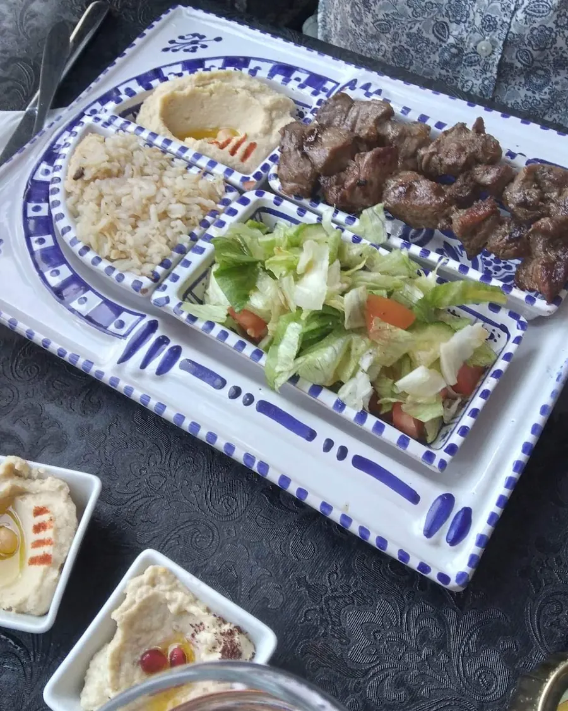
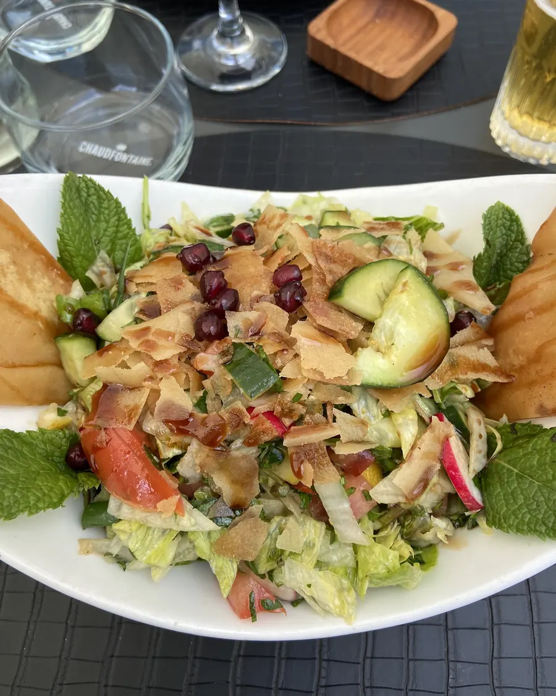
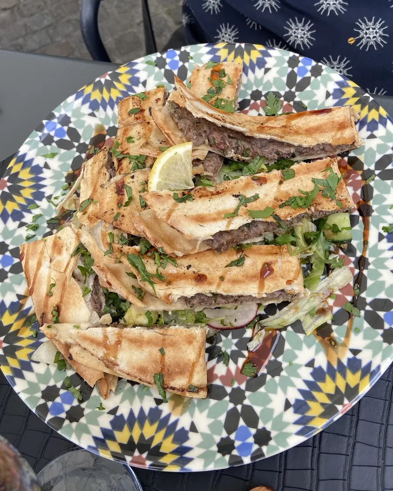
« […] les mets étaient délicieux et très variés. Un réel délice ! »Lucie B., avis Google, venue en famille
Faites glisser pour voir les plats
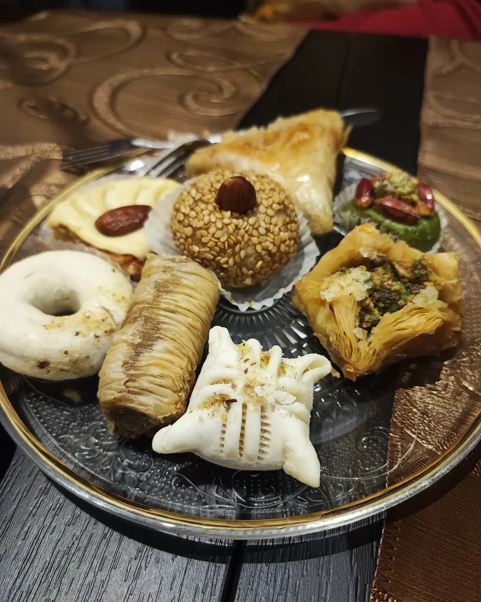
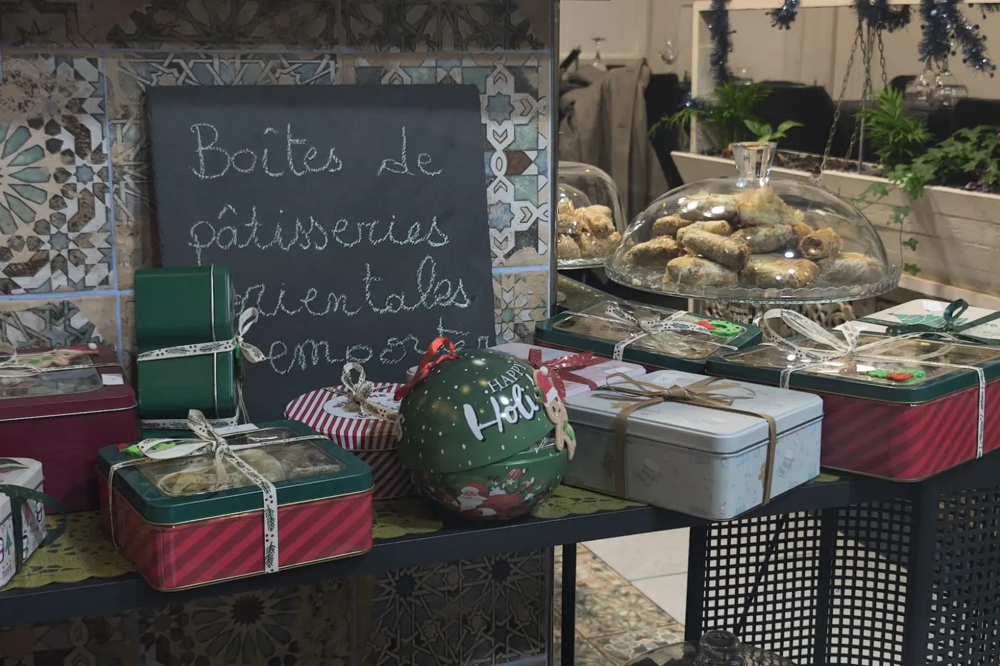
Thé et douceurs
Le thé dans l'argent, et des pâtisseries pour la route
La fin du repas a son rituel : la théière d'argent ciselé arrive sur son plateau, avec le verre, à côté d'une assiette de pâtisseries orientales au sésame, aux amandes et à la pistache.
- Le thé servi dans la théière d'argent, en salle comme en terrasse.
- Boîtes de pâtisseries orientales à emporter : l'ardoise les annonce dans la salle, contre le mur de zelliges.
- Une boîte à faire préparer ? Un appel au 0472 66 37 05.
Décembre approche : une boîte de pâtisseries orientales, nouée d'un ruban, se partage à toute la table des fêtes.
Appeler pour une boîteRéserver
Votre table, n'importe quel jour de la semaine
Le jour, le service, le nombre de couverts : la demande se fait en trente secondes, même à minuit, quand le restaurant ne décroche plus.
Jamais goûté la cuisine libanaise ? Mélina non plus, avant sa première fois ici : J’ai adoré et le personnel était très gentil.
Avis
« Un réel délice ! »
Ce que des clients ont écrit sur Google après un repas aux Portes d'Orient : en famille, entre amis, ou pour une toute première fois.
Horaires et accès
Midi et soir, sept jours sur sept
| lundi | 12 h – 15 h · 18 h – 22 h |
|---|---|
| mardi | 12 h – 15 h · 18 h – 22 h |
| mercredi | 12 h – 15 h · 18 h – 22 h |
| jeudi | 12 h – 15 h · 18 h – 22 h |
| vendredi | 12 h – 15 h · 18 h – 22 h |
| samedi | 12 h – 15 h · 18 h – 22 h |
| dimanche | 12 h – 15 h · 18 h – 22 h |
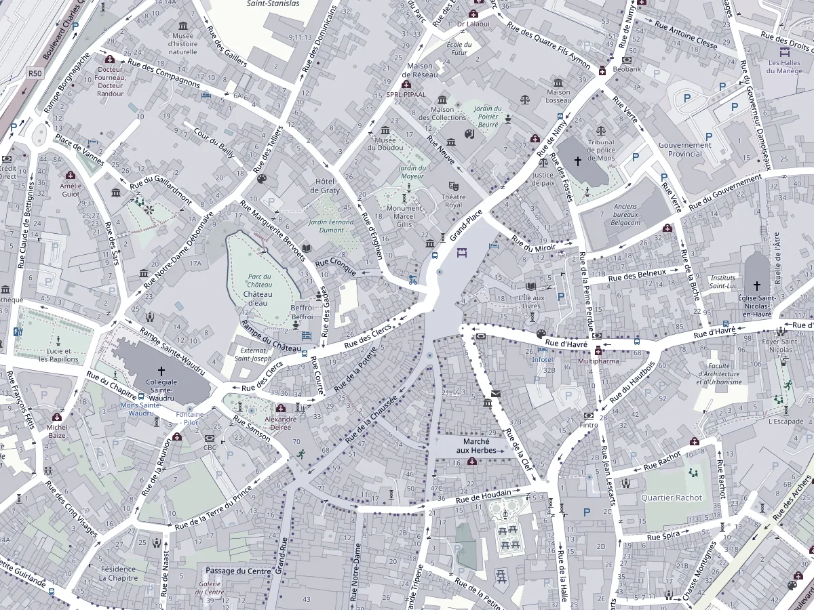
Itinéraire © OpenStreetMapEn terrasse
Aux beaux jours, la terrasse s'installe sur la Grand-Place. « Très agréable moment sur la grand place de Mons », écrit Carole.
En famille, entre amis
Pour une grande tablée ou un repas de fête, appelez le 0472 66 37 05.